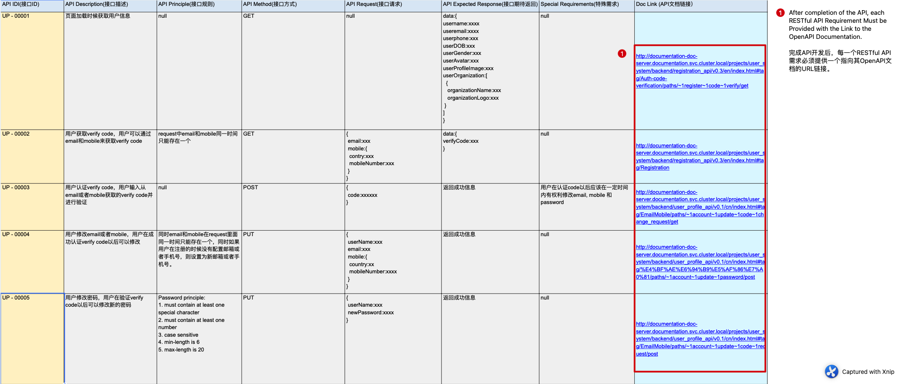

Submission Specifications
Backend application developers should follow the GitOps workflow to collaborate with DevOps team. Briefly, the final submission should include the following items:
- (Required) Docker image built and published to GitHub Packages(ghcr.io)
- (Required) A submission README.md documentation attached with the docker image (On ghcr.io, this documentation is the same as the github repo's root README.md). This documentation should include instructions on how to run and configure the docker image, e.g. necessary environment variables
- (Required) GitHub repo's root README.md file. Refer to Readme writing for the specifications
- (If Required) Live demo or presentation
- (If Applicable) OpenAPI formatted RESTFul API doc in documentation server. Restful API response code should be described here. The corresponding
index.htmlandswagger.yamlfiles should be uploaded into the GitHub repo underapi_docfolder. (You don't need to worry about the deployment of your documentation) - (If Applicable) Library API doc in documentation server
- (If Applicable) Design docs (e.g. UML class,sequence,workflow,dataflow diagrams) in relevant MS Office OneNote under project's SharePoint site
- (If Applicable) Other docs (e.g. useful tips,resources,advices) in documentation server
Notes: Point 1,2,3 are normally required in each development task. For Restful API development task, point 5 is required.
Docker Image Building Specifications
The submitted docker image should ONLY contain the minimum dependencies to reduce the image size. Specifically, for NodeJS app, use
npm install --only=prodto install only the productiondependenciesfrompackage.jsonThe base docker image we suggest is
node:lts-slimThe production code should be transpiled by
babelto support the node version if necessary and minify the production codeMulti-stage docker image building is suggested to minimise the final docker image size
Use
ENTRYPOINTto start the application andCMDto specify additional arguments. Note that directly usingnodeto run the application instead ofnpm, and all logs should be directed to stdout.
Detailed Submission Examples
Source code on github, README.md on the GitHub project and docker image in github container registry
You need to follow the code review process when submitting your code for reviews by your manager
Docker image uploaded to ghcr.io with instructions on docker image usage (submission file)

Environment variable description (submission file)

Live demo can be a video, gif or presentation in a meeting

Project general documentation location (SharePoint)
This OneNote notebook contains the UI/UX designs, use cases, database schema design, UML diagrams and other design documents of a specific project. This OneNote notebook normally contains a
Backendsection to store the design documents in the backend part of the project and other internal discussion materials.OpenAPI-formatted Restful API documentation
As the documentation server is maintained by priviledged admins, the developers are required to complete the following tasks:
- Submit OpenAPI-formatted files (an
index.htmland aswagger.yaml) in the project github repo - Notify your direct manager about the completion of the OpenAPI documents (If your manager is not available, please contact frank.su@datareachable.com for help)
- Once you've notified your direct manager about the documentation completion, please wait until the your manager return you the URL to the OpenAPI documentation
- After you receive this URL, you're required to attach each API URL to the API requirement documentation
Project-specific response code and its detailed descriptions should be recorded in the OpenAPI document. Refer to response format for details.
OpenAPI doc submission location in the GitHub repoAttached OpenAPI doc links to the RESTful API requirement spreadsheetAn OpenAPI example is given here.
To view the formatted API document, there are several options (use any one of them):
- Paste your YAML file into the swagger editor
- Install
redoc-cliand start a local server to serve the OpenAPI specification files - Bundle the specification file into zero-dependency HTML file via
redoc-cli, and open the bundled file using your local web browser
Note: Accessing the
index.htmlfile in your local browser is NOT working due toReDocissuesFor additional OpenAPI related tools, e.g. GUI editors, refer to tools.
- Submit OpenAPI-formatted files (an
Design docs should be uploaded in project OneNote
Several design diagram examples can be found here.
Other docs are also uploaded in the project OneNote or SharePoint